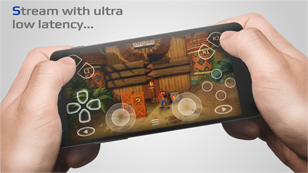

用了 PSPlay 半年才发现的五个隐藏技巧，把延迟压到个位数
以为 PSPlay 就是手机远程玩 PS5？翻了底朝天才挖到这些官方没怎么宣传的冷门设置——从 USB 有线降延迟到 Root 设备的系统级调优，每一个都能让你体感质变。
你以为 PSPlay 就是个手机装 APP、自动搜主机、躺床上远程玩 PS5 的工具？
我当初也是这么想的。从PSPlay官网装完APP之后连不上，折腾了两个礼拜 NAT 类型才通；通了之后感觉延迟有点高，以为远程串流也就这样了——直到某天翻设置翻到眼睛都花了，发现 PSPlay 藏得真深。从 USB 有线接法的冷知识，到 Root 设备解锁的系统级调优，再到虚拟手柄的多套配置切换，每个功能都在"设置 → 子菜单 → 更深的子菜单"里面躲着，不刻意挖根本看不见。
这篇就把我翻到的五个最有价值的隐藏技巧列出来，每个都讲清楚"在哪、怎么开、什么场景真有用"。如果你之前只是跑通了远程，看完再去调一遍，大概率体感会不一样。
隐藏技巧一：USB/OTG 有线接手柄，但你用的可能是充电线
这个真的是让我拍大腿的发现。之前用蓝牙连 DualSense，感觉还不错，但某次想玩《铁拳 8》打排位，蓝牙的微延迟让我连招老是慢半拍。查了一下才知道，Android 蓝牙手柄的输入延迟典型值是 8-15ms，而 USB 有线能压到 1-3ms——这不是细微差别，是格斗游戏里能不能接住对手升龙的差别。
问题在于：你以为插了 USB 就是有线了，其实很多手机配的那条线根本不是数据线。
APP 从官方下载下就行，免费无广告。具体怎么弄：找一根支持数据传输的 USB 线（DualSense 自带的那条就可以），加一个 OTG 转接头——USB-C 口手机买「USB-C 转 USB-A 母座」，Micro-USB 口同理。插进去之后，手柄会自动开机，PSPlay 直接识别，不需要任何配对。

藏在哪里？PSPlay 设置里根本不需要开关，插上就生效。但很多人卡在 OTG 线买错了——淘宝上几块钱一根的"OTG 线"很多只支持充电不传输数据，插上去手柄一直亮灯充电但手机没反应，换一根支持供电+数据的就好。还有部分老旧 Android 手机需要在系统设置里手动开 OTG 功能，搜一下你机型的关键词就能找到。
什么人用得上？格斗、竞速、FPS 这类对操作精度敏感的玩家，值得换一根线。如果你只是躺着玩玩 RPG，蓝牙也够了，没必要折腾。
隐藏技巧二：Root 设备解锁的三档系统级调优
这个是整个 PSPlay 最藏得住的功能——非 Root 设备上这些选项直接灰掉，连说明文字都不给你看全。我也是后来去PSPlay文档翻了一下才确认这些是 Root 专属的系统级调优，文档里把 Root 和非 Root 的差异讲得很细。Root 不会导致索尼封号，所有操作都在本地 Android 上，主机那边完全无感。但代价是失去手机保修，而且部分银行 APP 会检测 Root 状态用不了，建议在备用机上试。
解锁的三个选项分别是：
强制 Vulkan 渲染。部分 Android 手机硬件支持 Vulkan，但系统默认给视频解码分配的优先级很低。Root 后在 PSPlay 设置里能直接强制走 Vulkan API，相比传统 OpenCL/EGL 路径，GPU 调度延迟更低，CPU 占用也少。这个选项藏在「画面与流畅度 → 延迟优化」子菜单里。
跳过系统视频后处理。Android 的 SurfaceFlinger 层会对所有视频流做色彩增强、运动补偿之类的处理——这些东西是给看电影设计的，对游戏串流完全是多余开销。Root 后能在 PSPlay 设置里打开一个选项，让视频流直接输出到显示硬件，绕过整个 SurfaceFlinger，可以再省 5-15ms 的显示延迟。同时还能避免部分三星/小米机型出现的"画面颜色发灰"和"运动拖影"，副作用是没有了，但你得接受玩游戏时的色彩跟主机上略有差异。
触摸事件优先调度。这个针对用虚拟手柄的玩家。Root 后可以调整 Android 的 CPU 调度优先级，让触摸事件的处理排在后台进程前面——你按虚拟按键的那一刻，系统会优先响应，不被后台的微博、微信抢时间片。
三个选项一起开的话，竞技游戏的体感延迟能压到个位数，我玩《GT7》时方向盘输入跟画面几乎同步，跟坐在主机前的差距已经很小了。
隐藏技巧三：虚拟手柄布局可以存多套，还能调透明度
很多人知道 PSPlay 有虚拟手柄，但不知道它能存好几套自定义布局配置文件，而且每个都能调按钮位置、大小、甚至透明度。
怎么弄：打开 PSPlay，点屏幕呼出虚拟手柄，然后长按任意按钮进入编辑模式——拖动按钮改位置，双指缩放改大小，右上角有个滑块调透明度。编辑完保存成一个配置文件（比如「躺着格斗」「坐着射击」「极简触摸」），下次直接切换。我存了三套：《铁拳》用的大按键布局，《COD》用的精简方向键布局，还有一套透明度调到 5% 的几乎看不见的"隐身布局"——适合只想偶尔点两下菜单、不想让虚拟键挡画面的时候。

藏在哪里？编辑模式的入口确实不太显眼，得长按按钮才会出来。而且透明度滑块也在编辑界面的角落，第一次翻了好一阵才找到。
隐藏技巧四：NAT 连不上的时候，先查是不是运营商 CGNAT
这个不算 PSPlay 本身的功能，但我当初折腾远程连不上时绕了至少三天弯路，写出来是给跟我当初一样懵的人看的。
现象是：PSPlay 自动远程一直等超时，路由器端口转发配好了也没用，PS5 的 Internet 连接测试通过能上网，但远程就是不通。最后发现根本不是路由器的锅——运营商没给我分配公网 IPv4，把我放在 CGNAT 后面了。
怎么确认：打开 PS5「设置 → 网络 → 查看连接状态」记下主机显示的内网 IP，然后手机开移动数据访问 whatsmyip.org，记下显示的公网 IP，再打开自家路由器后台看 WAN 口 IP。如果 whatsmyip 的 IP 跟路由器 WAN 口的 IP 对不上，那就是 CGNAT 没跑了。
解决办法其实很简单：打运营商客服电话（电信 10000、移动 10086、联通 10010），说"我家宽带 NAT 类型是 3，影响游戏和远程连接，能不能帮我分配一个公网 IPv4 地址"。大部分地区免费给，我上次打电信客服五分钟就搞定了。换完之后 PS5 NAT 类型变成 2，远程连接瞬间通了。
什么人用得上？只要远程连不上就先查这个，别像我一样先折腾路由器固件、先换网线、先怀疑主机设置——浪费时间。
隐藏技巧五：开发者选项里的两招非 Root 也能用
如果你不想 Root 手机，还有两招在 Android 系统开发者选项里的调优，效果不如 Root 级别的，但好歹是免费的。
第一招：设置 → 关于手机 → 连续点击「构建号」七次开启开发者模式，然后进开发者选项打开「强制 GPU 渲染」和「禁用硬件叠层」，这两个能减少系统开销，给 PSPlay 让出更多 GPU 时间片。
第二招：还是在开发者选项里，把「窗口过渡动画」「过渡动画时长」「动画程序时长缩放」都改成 0.5x 或者直接关闭。Android 的所有界面动画都会消耗 CPU 资源，关掉之后手机本身也会变快一截。
这两招加起来能给 PSPlay 省个几毫秒，不如 Root 调优显著，但零成本，建议所有人都开。
一个提醒：别让这些技巧白折腾
说了半天隐藏功能，有个坑得提醒一下：Root 调优虽然香，但如果你用主力机折腾，银行 APP 用不了、部分游戏检测 Root 不让进（虽然不是 PS 游戏，但其他安卓游戏可能中招），而且刷机改内核的风险真的不是闹着玩的——XDA 上变砖案例到处都是。真要试，找个备用机。
另外 USB OTG 有线连接虽然延迟低，但线材质量直接决定效果。买之前确认是「支持数据传输 + 支持供电」的，别只看标题有 OTG 字样就下单，收到发现是弱线又得退，我之前踩过这个坑，退了两次才买到能用的。
最后说句实在的
PSPlay 这个 APP 的社区氛围挺有意思的——作者在 GitHub 上更新很勤，文档站也维护得不错，但很多核心功能都藏在不太容易找到的地方，像是故意留给爱折腾的人挖的。从 USB 有线到 Root 调优到 NAT 排查，每挖一个都有种"原来还能这样"的惊喜感。用远程串流玩游戏的玩家不少，但真正把 PSPlay 用透的没几个，大多是跑通了就收手。
其实这些隐藏功能的门槛真的不高，就是没人告诉你在哪。找到一个、开一个，体感一点一点变好。折腾的乐趣不就是在这里吗？这套调优思路和 NAT 排查方法我整理了一份文字资料，GitHub、Gitee、GitCode 三个仓库都有——考虑到国内网络有时候会抽，多个备份总不至于失联。GitHub上的版本更新最快，Gitee适合国内访问慢的朋友，GitCode纯粹是多一份保险。